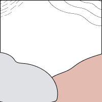
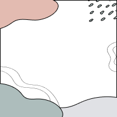
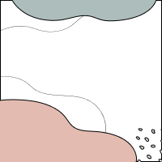

Visual Thinking Analysis

The picture on the left is actually chat sticker (meme). This is an meme about a character being narcissistic. The most interesting part is that the decoration in the picture can really show the emotion which the picture wants to show. For example, the blooming roses and sparkling yellow stars around the figure and the figure's sparkling eyes, as well as...
Read More10 Intriguing Photographs to Teach Close
Reading and Visual Thinking Skills

The article presents a compelling approach to enhancing reading and visual thinking skills through the analysis of photographs. For students, especially younger ones, when they engage in detective-like behavior by having them look at pictures, they improve their powers of observation and attention, and even have stronger critical thinking...
Read MoreBest Practices For Modals / Overlays
/ Dialog Windows

The biggest advantage of a modal window is that it attracts the user's attention. The user can stop the original goal and complete the task in the modal window to accomplish the goal of the website. This is especially effective when the user is required to fill in advance information. However, this is also the biggest disadvantage of modal windows...
Read MoreBest Practices For Form Design
The key takeaway is the emphasis on simplicity, clarity, and user engagement throughout the form-filling process. For example, forms in general have the ability to gather information, but if people find it too much of a hassle and don't do it is the worst possible outcome. So it is very important to design the content of the form in a way that is simple to complete...
Read More